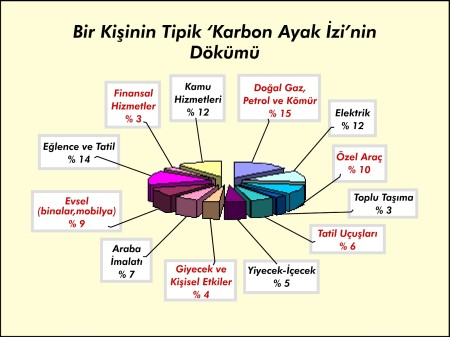
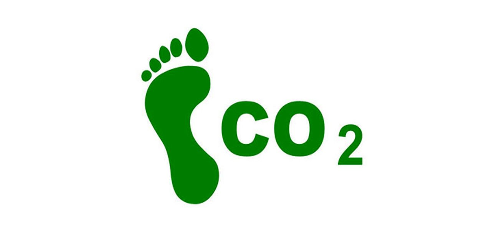

Atmosferde bulunan su buharı, karbondioksit, metan ve diazot monoksit gibi gazların miktarı arttıkça yeryüzü daha fazla ısınmaktadır. Bunun ana nedeni insan faaliyetleri etkisidir. Bu faaliyetler doğrudan ya da dolaylı olarak seragazları salımına neden olabilir. Isınma, aydınlatma, pişirme, ulaşım, hayvancılık faaliyetleri, ve endüstriyel süreçler sonucu atmosfere salınan eşdeğer karbondioksit miktarı günden güne artmaktadır.
Bir bireyin, bir ülkenin veya bir kuruluşun sürdürdüğü faaliyetler sonucu atmosfere saldığı sera gazlarının karbondioksit cinsinden karşılığı karbon ayakizi olarak adlandırılır (Plassmann ve Edwards-Jones, 2010). Doğal süreçte doğa atmosferde bulunan sera gazlarının dengesini sağlamaktadır. Karbon ayak izi hesabı daha ne kadarlık bir biyokapasiteye ihtiyacımız olduğunun cevabını vermektedir. Normal şartlarda, kişi başına düşen biyokapasitenin kişi başına düşen ekolojik ayak izinden fazla olması beklenir. Kişi başına düşen karbon ayak izi yaklaşık 4 tondur. Çin, Amerika ve Hindistan gibi ülkeler en büyük karbon ayak izine sahip ülkeler arasında yer alırken, Türkiye, İtalya, Almanya, İspanya gibi birçok ülkenin daha fazla biyokapasiteye ihtiyacı bulunmaktadır
Karbon Ayak İzi Nedir ?

Karbon ayak izi, birim karbondioksit cinsinden ölçülen, üretilen sera gazı miktarı açısından insan faaliyetlerinin çevreye verdiği zararın ölçüsüdür ve iki ana parçadan oluşur
DÜNYAMIZI KORUYALIM

KARBON AYAKİZİ
Atmosferde bulunan su buharı, karbondioksit, metan ve diazot monoksit gibi gazların miktarı arttıkça yeryüzü daha fazla ısınmaktadır. Bunun ana nedeni insan faaliyetleri etkisidir. Bu faaliyetler doğrudan ya da dolaylı olarak seragazları salımına neden olabilir. Isınma, aydınlatma, pişirme, ulaşım, hayvancılık faaliyetleri, ve endüstriyel süreçler sonucu atmosfere salınan eşdeğer karbondioksit miktarı günden güne artmaktadır. Bir bireyin, bir ülkenin veya bir kuruluşun sürdürdüğü faaliyetler sonucu atmosfere saldığı sera gazlarının karbondioksit cinsinden karşılığı karbon ayakizi olarak adlandırılır (Plassmann ve Edwards-Jones, 2010). Doğal süreçte doğa atmosferde bulunan sera gazlarının dengesini sağlamaktadır. Karbon ayak izi hesabı daha ne kadarlık bir biyokapasiteye ihtiyacımız olduğunun cevabını vermektedir. Normal şartlarda, kişi başına düşen biyokapasitenin kişi başına düşen ekolojik ayak izinden fazla olması beklenir. Kişi başına düşen karbon ayak izi yaklaşık 4 tondur. Çin, Amerika ve Hindistan gibi ülkeler en büyük karbon ayak izine sahip ülkeler arasında yer alırken, Türkiye, İtalya, Almanya, İspanya gibi birçok ülkenin daha fazla biyokapasiteye ihtiyacı bulunmaktadır